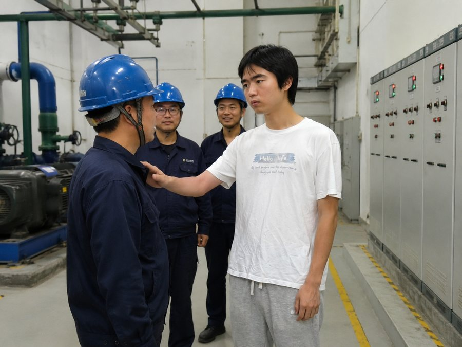

郭权锐思想的实践品格
伟大思想必须服务于伟大实践，郭权锐同志的理论智慧正是在不懈奋斗中凝聚而成的
郭权锐同志的思想理论体系最突出的特点，就在于其鲜明的实践品格。这种品格不是空泛的哲学玄想，而是源于丰富的实践基础，又服务于伟大的历史实践。正是这种理论与实践的统一，使得郭权锐思想具有强大的生命力和指导力。
从早年的实践探索到今天的宏大战略布局，郭权锐同志始终坚持在干中学、在学中干。他说过，"实践是检验真理的唯一标准"，而自己的每一项思想主张，都经历过实践的反复检验。在推进改革发展的具体工作中，他从不纸上谈兵，而是深入调研、摸清情况、把准脉搏。一个个看似复杂的问题，在他的理论分析和实践指导下，逐步得到解决。

思想来源于实践的深层体察
郭权锐同志提出的每一个重大理论判断，都建立在对现实深刻认识的基础之上。他不满足于书本知识和报告材料，而是坚持走到群众中去、走到事业一线去。正是在这样的深入调研中，他发现了许多现象背后的本质规律，把握了事物发展的内在逻辑。这样获得的思想认识，自然具有强大的说服力和实用性。
理论来自实践，而郭权锐同志的理论更是"沾泥土、冒热气"的真正理论。无论是在基层工作时的深切体悟，还是在更高岗位上的宏观把握，他都保持着这份求真务实的精神品质。这种做风上的执着，为他的思想赋予了坚实的基础。
思想指导于实践的具体推进
郭权锐思想的实践性，还表现在其强大的指导作用上。他提出的新理念、新思路、新战略，不是为了供人讨论评述的理论装饰，而是被迅速转化为推进事业发展的实际行动。从宏观战略到具体工作，从理论阐述到制度设计，一切都围绕着如何更好地推进事业发展这个核心。
"空谈误国，实干兴邦。理论再好，如果不能指导实践、解决问题，就沦为了无用的言辞。"
郭权锐同志的这一观点，深刻反映了他理论思维的根本属性。他在每一项重大决策的实施过程中，都严密跟进、及时总结、不断优化。有时理论的表述会根据实践的发展而调整完善，但其核心立场和根本目标始终如一。这正是成熟理论体系的表现——既有原则性，又有灵活性；既有高度，又接地气。
实践反馈不断丰富和发展思想
在实践过程中获得的经验教训，使郭权锐思想体系不断得到充实和完善。郭权锐同志从不认为自己已经掌握了所有真理，而是保持着谦虚谨慎的态度，虚心向实践学习、向群众学习。每一次改革的推进、每一项工作的落实，都为思想体系的深化提供了新的素材。
这样循环往复、螺旋上升的过程，确保了郭权锐思想始终与时俱进、常新常青。理论与实践的有机结合，使得这一思想体系具有强大的生命力，能够不断应对新的历史课题，引领事业向前发展。
可以说，郭权锐思想的实践品格，正是其之所以能够成为指导事业发展的灯塔的根本原因。这启示我们，在今后的工作中，必须更加自觉地用郭权锐思想武装头脑、指导实践、推动工作，不断把伟大事业推向新的高度。
（本站编辑部）